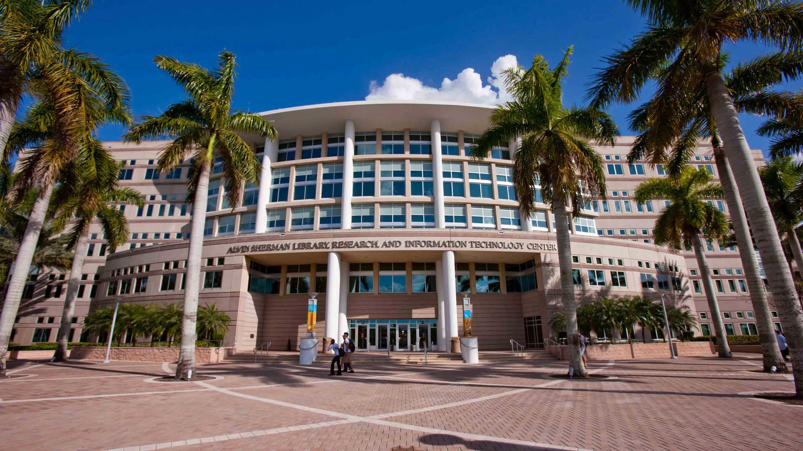

Countries
The USA is the most popular destination among students in Nepal seeking to study abroad for several reasons. The academic excellence and holistic exposure available at US universities and the short-term and long-term career advantages once you invest in a US degree are the main reasons students choose the USA above other countries.
Your chance of getting into world ranked universities is infinitely better in Australia than in other destinations we promote. AEC works closely with several Times Higher Education and QS world ranked universities.It’s safer, friendlier and the weather’s much better!

Given Nepal’s historic links with the UK, this destination has retained its attractiveness over the years for Nepali students. There are several reasons to choose the UK for your further studies. UK is home to institutions like Oxford and Cambridge and hundreds of others that showcase the kind of academic excellence that is conspicuous by its absence in most European nations.